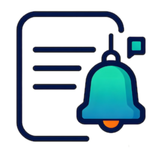

本轮日志汇总3 条
- 影视入库 1 部 · 刮削完成 2 部
- 磁盘存储空间 1 唤醒 1 次（同类型已合并）
- 系统更新检查完成，无需处理

日志推送下面这段是界面示意：几秒内把新日志读进来、合并成一条汇总、再分发到各个渠道。真实部署默认每 5 秒查一次。
本轮还在收日志，汇总会在轮询结束时生成
事件库只读打开，配置和待发队列都留在本地。没有云端账号，也没有第三方中转。
定时查 log 表，以只读方式打开，只取启动之后的新记录。不写日志表、不改系统设置。
mode=ro · 默认 5s300 秒去重窗口内同一事件不重复打扰；同一类型的磁盘事件 5 秒内合并；影视、音乐库静默 60 秒后结算。
dedup 300s · merge 5s勿扰时段只累计、结束后补发一条；待发通知落盘保存，全部渠道都失败时保留整批、至少间隔 60 秒重试。
outbox · retry 60s每个渠道可单独开关、单独填 key。消息直接从你的 NAS 发往各渠道。
Docker 版默认端口 18080，FPK 版安装时默认 18230，仅本机可访问，从飞牛桌面打开。
保存即生效。 改完点保存，配置热加载，一般不需要重启容器。
key、token、SMTP 密码在页面上打码显示。密码不会明文保存，部署时可用环境变量预置初始密码（仅未设过密码时生效）。
另有历史记录页，能翻到最近的推送记录（最多保留 1 万条），以及哪些渠道投递失败过。
Docker 适合大多数情况；飞牛应用中心装 FPK 更省事，装完点开就能配。
# 挂载 fnOS 的事件库（只读即可）
services:
fn-message-bots:
image: sunanang/fn-message-bots:latest
container_name: fn-message-bots
restart: unless-stopped
environment:
- TZ=Asia/Shanghai
volumes:
- /usr/trim/var/eventlogger_service:/usr/trim/var/eventlogger_service:ro
- ./config:/app/config
- ./data:/app/data
# 用上面的按钮下载 .fpk # 应用中心 → 手动安装 → 选择文件 # 或从源码打包（需要 fnpack） ./scripts/build-fpk.sh
af7514ef951fa5c4c46d65857efbb993a8f9aaad023784b2aca3c83319a82a2b FnMessageBot-2.7.5.fpk 5a485f309b0e04ca349ff4f728d706a29aba94f330acd9976122b7ef6393e6d3 FnMessageBot-2.7.5-root.fpk
两个包只差安装权限：一般装普通版；需要写系统目录时才用 root 版。
不会。数据库只读打开，只查启动之后的新记录；它不写日志表、不改系统设置，除了自己的配置目录和本地数据目录（./config、./data）不落任何文件。
这是刻意的。一次导入会刷出几十条记录，逐条推送只会让人屏蔽群。打开「轮询汇总模式」后，一轮的日志按轮询批次合并成一条汇总；影视、音乐库还会在连续 60 秒没有新增后合成一条本轮汇总。默认是逐条推送 + 300 秒去重。
开勿扰模式（默认关闭，时段默认 22:00–07:00）。时段内不推送、只累计，结束后汇总成一条补发；同一类型的磁盘事件在 5 秒窗口内本来也会合并成一条。
不会。待发通知会落盘保存，全部渠道都失败时保留整批、至少间隔 60 秒重试；连续失败达到阈值可触发进程内重启通知链路（默认关闭，可开启）。
能，每台各跑一份、各配各的渠道。不建议多个进程指向同一个数据目录：一个数据目录只允许一个进程。
影视入库与刮削、磁盘唤醒与休眠、音乐入库与移除、收藏与歌单变更、备份任务结果、相册共享与人脸识别、WAN IP 变化、SSH 登录与超时、系统更新等。可在配置页逐项开关。
密码不会明文保存，也没有找回通道。部署时可用环境变量 FNMB_WEB_PASSWORD 预置初始密码（仅在还没设过密码时生效）。